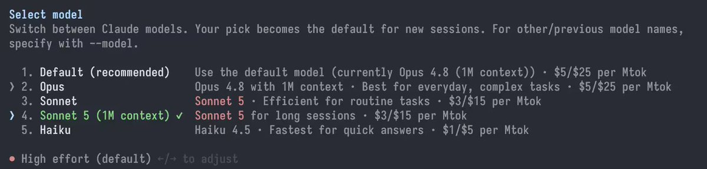
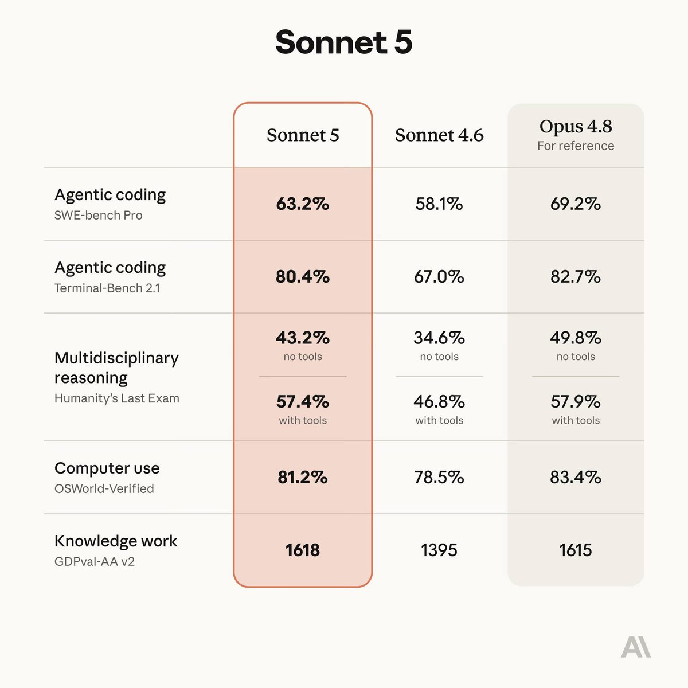

要是没人公开Claude Code对中国用户的检测，我想这项“实验”将会长期存在，Anthropic真是道德感低下的公司
不过Sonnet 5上了，更新到CC 2.1.197就能看到。第三方平台像pplx已经引入了sonnet5，去掉了sonnet4.6，同时发现额外增加了glm5.2。或许是glm5.2的冲击，Fable 5 将于7月1日起，在全球范围内的 Claude 平台、https://t.co/Koc6AcHKx6、Claude Code 和 Claude Cowork 上向用户开放
对于 Pro、Max、Team 以及部分企业计划，在7月7日之前，Fable 5 将包含在每周高达50%的使用限额中，之后将通过消耗使用积分（usage credits）来提供。我们将尽快在 AWS、Google Cloud 和 Microsoft Foundry 上重新启用该模型的访问

不过Sonnet 5上了，更新到CC 2.1.197就能看到。第三方平台像pplx已经引入了sonnet5，去掉了sonnet4.6，同时发现额外增加了glm5.2。或许是glm5.2的冲击，Fable 5 将于7月1日起，在全球范围内的 Claude 平台、https://t.co/Koc6AcHKx6、Claude Code 和 Claude Cowork 上向用户开放
对于 Pro、Max、Team 以及部分企业计划，在7月7日之前，Fable 5 将包含在每周高达50%的使用限额中，之后将通过消耗使用积分（usage credits）来提供。我们将尽快在 AWS、Google Cloud 和 Microsoft Foundry 上重新启用该模型的访问


@IntCyberDigest Hi, this is an experiment we launched in March that was meant to prevent account abuse from unauthorized resellers and protect against distillation.
The team has landed stronger mitigations since then and we’ve actually been meaning to take this down for a while. We merged the
The team has landed stronger mitigations since then and we’ve actually been meaning to take this down for a while. We merged the